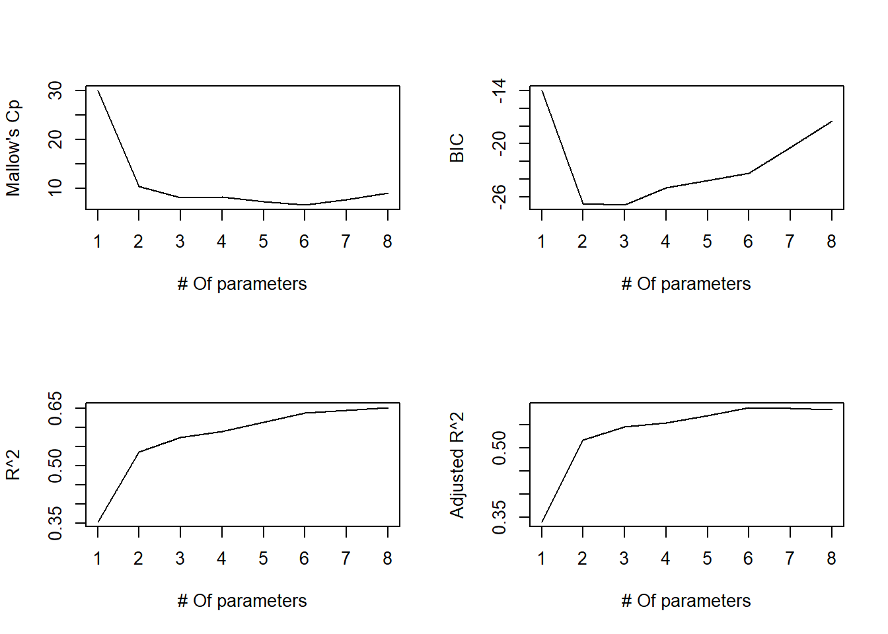
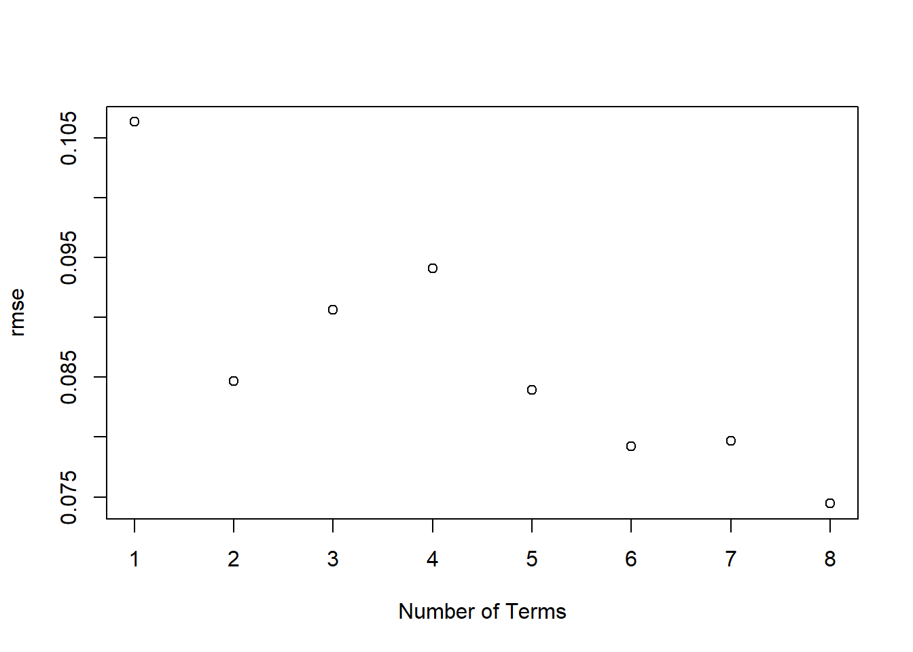

After introducing cross-validation, we return to our goal of addressing feature selection. We’ll continue discussing this in the context of predicting Trump vote with the following predictors:
There are \(2^8 = 256\) possible model we could select using subsets of these predictors1. How can we possibly find the needle in this haystack of possibilities2?
The ideal algorithm for performing this task would be to
Fit all possible models that involve subsets of predictors.
Choose the one which minimizes some reasonable metric for model validation.
Cross-validation is one reasonable metric and we’ll come back to it in 4.3 and 4.4, but we’ll dedicate this section to some more classical procedures based on p-values and complexity metrics.
Stepwise Selection via p-values
In 4.1, we noted that it is a bad idea to drop all terms with high p-values from a full model as you might miss something important. It is a slightly less bad idea to drop terms one at a time based on highest p-value. This process is called backwards selection and was pretty common in the olden days of 20th century statistics. It still has its moments though so we’ll demonstrate for the election dataset here.
Looking at the p-values in the full model, non.citizen has the highest p-value:
Call:
lm(formula = trump.vote ~ median.income + metro + high.school +
white.pov + income.ineq + non.white, data = election2016[,
2:10])
Residuals:
Min 1Q Median 3Q Max
-0.211967 -0.030812 0.001726 0.041943 0.103866
Coefficients:
Estimate Std. Error t value Pr(>|t|)
(Intercept) 2.956e+00 7.572e-01 3.904 0.000329 ***
median.income -6.140e-06 2.136e-06 -2.874 0.006270 **
metro -1.647e-01 7.757e-02 -2.123 0.039571 *
high.school -1.213e+00 6.050e-01 -2.005 0.051270 .
white.pov -1.196e+00 7.208e-01 -1.660 0.104214
income.ineq -1.681e+00 8.227e-01 -2.044 0.047151 *
non.white -2.311e-01 8.185e-02 -2.823 0.007169 **
---
Signif. codes: 0 '***' 0.001 '**' 0.01 '*' 0.05 '.' 0.1 ' ' 1
Residual standard error: 0.06482 on 43 degrees of freedom
Multiple R-squared: 0.6372, Adjusted R-squared: 0.5866
F-statistic: 12.59 on 6 and 43 DF, p-value: 3.853e-08
Next we drop white.pov and so on until all the remaining variables are significant. I’m getting bored so here is an automated procedure. It uses the broom package to make the output of lm easier to access. The output is the list of variables dropped at each step and the final model summary:
library(broom)election_red = election2016[,2:10]# Fit the full modelfull_mod =lm(trump.vote ~ .,election_red)# Get max p-value and corresponding indexmod_tidy =tidy(full_mod)m =max(mod_tidy$p.value)ind_max =which.max(mod_tidy$p.value) -1# Adjust for intercept indexingwhile (m >0.05) {# Print the term being removedprint(mod_tidy$term[ind_max +1])# Remove the variable using index election_red = election_red[,-ind_max]# Refit model and update p-values mod_tidy =tidy(lm(trump.vote ~ .,election_red))# Update max p-value and index m =max(mod_tidy$p.value) ind_max =which.max(mod_tidy$p.value) -1}
The final model has three terms (median.income, metro, non.white) so this procedure is saying that is the best subset of features to use.
Forward selection is similar except it starts from the null model and builds up from there by adding the predictor with the lowest p-value in all possible SLM. Then it adds a second variable and so on until no variables have p-values < 0.05. Mixed Selection refers to combinations of the two where we do a step of forward selection adding the best new predictor and then a step of backwards selection taking away the worst predictor if any p-values > 0.05 . We won’t cover these in detail because we want to get away from p-values anyways and they are more tedious to program. We mention them here because they are motivational for what is more commonly done using complexity based metrics and the leaps package.
The Leaps Package
The leaps package has a very easy to use structure and nice output format. As long as you don’t have too many variables3, it works pretty well to use its default method of performing an exhaustive search of all possible models. For each \(q = 1,2,...,p\) where \(p\) is the number of predictors, it will return the “best” model with \(q\) predictors (best to be explained below). Here is what it looks like for our trump.vote model:
library(leaps)trump_regfit=regsubsets(trump.vote~.,data=election2016[,2:10],nvmax =NULL) # nvmax = NULL means use all predictorssummary(trump_regfit)
To interpret this, lets start by looking at row 1 which has a * below non.citizen. This means that of all possible single predictor models for trump.vote, the one using non.citizen was best. The second row says that the best model with two predictors uses non.citizen and median.income and so on.
Now what do we mean by “best”? Well, when comparing two models with the same number of predictors (like deciding which single variable model to use), regsubsets just uses least squares (i.e. SSE which is equivalent to using MSE, RMSE, or \(R^2\) - we’ll call these least squares based metrics for the rest of the notes). However, when you are comparing two models with a different number of predictors, it’s not so simple because a model with more predictors has an automatic advantage. You can’t increase any of the above mentioned metrics by adding more predictors so it looks like it’s always best to add as many as possible (which we know is bullshit). There are two choices then
Use cross-validated versions of the metrics (like in the last notes)
Use a complexity based metric which balances least squares with number of predictors
Regsubsets uses three different types of complexity metrics: Mallow’s Cp, Bayesian Information Criteria, and Adjusted R^2. All three are based on modified version of least squares metrics with a penalty for having more predictors. The former two look at an error term proportional to: \[
SSE + C(p)
\] where \(C(p)\) is a “cost” function that increases with the number of parameters \(p\) in the model and hence, penalizes complex models (those with higher \(p\)) more heavily.
Most complexity metrics differ only in the proportionality constants and their choice of \(C(p)\). For example,
Mallows Cp (which is equivalent to the more commonly used Akaike Information Criteria or AIC) uses a penalty proportional to \(2 p\)
Bayesian Information Criteria (BIC) uses a penalty proportional to $ (n) p$ (and hence penalizes excess parameters more steeply than Mallow’s)
The third, adjusted \(R^2\), is slightly different in that it calculates a degree adjusted form of \[
R^2 = 1-SSE/SST.
\] by doing \[
Adjusted \; R^2 = 1 - \frac{SSE}{SST} \frac{n-1}{n-p-1}
\]
A larger \(p\) will increase the fraction multiplying the second term and hence decrease adjusted \(R^2\). Here are plots of all three for our trump model with the actual R^2 for comparison:
par(mfrow=c(2,2))sum_fit_full=summary(trump_regfit)plot(sum_fit_full$cp,type="l",col="black",xlab="# Of parameters",ylab="Mallow's Cp")plot(sum_fit_full$bic,type="l",col="black",xlab="# Of parameters",ylab="BIC")plot(sum_fit_full$rsq,type="l",col="black",xlab="# Of parameters",ylab="R^2")plot(sum_fit_full$adjr2,type="l",col="black",xlab="# Of parameters",ylab="Adjusted R^2")

With Mallow’s and BIC, the goal is minimization. From the plot, it looks like BIC suggests the three variable model is best. We can confirm this using which.min():
which.min(sum_fit_full$bic)
[1] 3
You can view the estimated coefficients in this model by setting id=3 in coef (although if you want standard errors and p-values, you have to refit the model with lm()):
Note that you can do backwards selection by changing the method argument. This will result in different models because it can never add back something it has previously dropped:
The final option sequential replacement (“seqrep”) is a mix of forward and backward selection. It starts moving forward by adding the best single variable model. But then after it adds a second variable, it checks if dropping the first and adding a different variable would be better. You can see in the application here that it ends up dropping non.citizen after the first step:
Take some time to further look at the differences in the model outputs to get some intuition about what’s going on. I think that when possible, it’s best to use the exhaustive option and then seqrep and as an alternative if the processing time is too long.
On drawback of regsubsets() is that it can not be used directly with predict. There are a couple of ways around this. The following helper function5 which can be loaded for these purposes:
predict_regsubsets =function(fit_reg, newdata, id) {#Input: fit_reg = regsubsets object, newdata = data for calculations predictions, i = # of terms#Output: predictions form =as.formula(fit_reg$call[[2]]) # Extract formula from fit_reg object X =model.matrix(form, newdata) # Get model matrix X for newdata betahat =coef(fit_reg, id = id) # Get estimated coefficients for model of size id xvars =names(betahat) # Extract columns for variables in id model yhat=as.numeric(X[, xvars] %*% betahat) # Compute predictions as X*betahatreturn(yhat)}
As an example call, if we want to compute the predicted values of trump.vote for the three variable model, we do
Connection to last class: Using Cross-Validation to decide between models.
Notice that all three complexity metrics give different answers, and none of them used cross-validation directly so at this point you’re saying “why did we go through all that trouble for nothing”? Well the real payoff will come in Module 4.3 but we can start to shwo some utility here.
First, we’ll modify our looCV routine from Module 4.1:
looCV_regsubsets =function(fla, df, p){# Input: fla = model formula, df = data frame, p = # of predictors# Output: rmse for all optimal models with i coefficients, i = 1,...,p n =nrow(df) y = df[[all.vars(fla)[1]]] # Extract outcome variable rmse =numeric(p)for(i in1:p){ yhat =numeric(n)for(j in1:n){ train = df[-j, ] test = df[j, ] fit_reg =regsubsets(fla, train, nvmax = i) yhat[j] =predict_regsubsets(fit_reg,newdata = test,id = i) } rmse[i] =sqrt(mean((y - yhat)^2)) }return(rmse)}
Applying this to our model yields the following results:
rmse=looCV_regsubsets(trump.vote~.,election2016[,2:10],8)plot(1:8,rmse,col="black",xlab="Number of Terms")

By this metric, the full model is best!
Deciding on the final model
For the election2016 data, many of the different approaches led to different “best” models:
Using an exhaustive or seqrep search with BIC or using a forward search with pretty much any metric says the model with three predictors median income, non-citizen, and income inequality was best.
Using an exhaustive or seqrep search with Mallow’s or Adjusted R^2 or AIC says the six predictor model with median income, metro, high school, white poverty, income inequality, and non-white was best
LOOCV says the full model with all eight predictors is best.
In this type of situation, I tend to lean towards choosing the simplest possible optimal model (in this case the three variable one), but I can’t ever be certain this is the right choice and I usually try and think about WHY I might be getting different answers. Here, the \(R^2\) value for the full model is pretty decent (about 65%) which means that we have a solid set of predictors to begin with, but I think the reason we get such different answers for optimal subsets is colinearity.
There are some pretty high correlations between the predictors as we saw in the last section. Of particular relevance is the fact that non-citizen is very heavily correlated with both metro and non-white. Therefore, the former could be serving as a surrogate summary measure for the latter two in the simpler model (or conversely, the latter two could be breaking up the effects of the former). Also notice that median income is heavily correlated with high school and white-poverty, both of which show up in the more complicated model and hence, dropping those latter two doesn’t mean much if we penalize models more heavily for extra parameters (like in BIC or forward selection).
The real lesson here is that model selection is as much art as science. Different methods reflect different assumptions and priorities. BIC prioritizes parsimony, adjusted \(R^2\) is more permissive, and cross-validation prioritizes predictive performance. Understanding WHY they disagree is more valuable than blindly following any one of them.
In other words, don’t choose - decide!
Practice
Recall that the Credit dataset from Practice Problem 2.2 contains simulated data on customer credit card balance based on several predictors including income, limit, rating, cards, age, education, own, student, married, and region.
Use the regsubsets function from leaps to perform an exhaustive search of all models for predicting the outcome Balance using all other variables as predictors
Which variables are included as predictors in the best two-feature model?
How many variables are optimal using BIC? Which variables are in this model?
How many variables are optimal using Cp? Which variables are in this model?
Bonus: How many variables are optimal using LOOCV? Which variables are in this model?
Note: The LOOCV routine above may throw back an error for answering the last question. If so, try running this command first to convert all the character columns to factors: `credit[ , 7:10] = lapply(credit[ , 7:10], factor)’. Also beware that it may take a while to run.
Footnotes
This can be argued by defining a model by a binary vector \((x_1,...,x_8)\) where \(x_i = 1\) if the \(i\)th variable is included in the model and 0 otherwise. There are two possibilities for each \(x_i\) hence \(2^8\) total such vectors.↩︎
Needle meaning best model here, sorry Sleeping Beauty…or Cinderella…or whichever Disney princess would most hate needles.↩︎
In the 20-50 range depending on your computing power↩︎